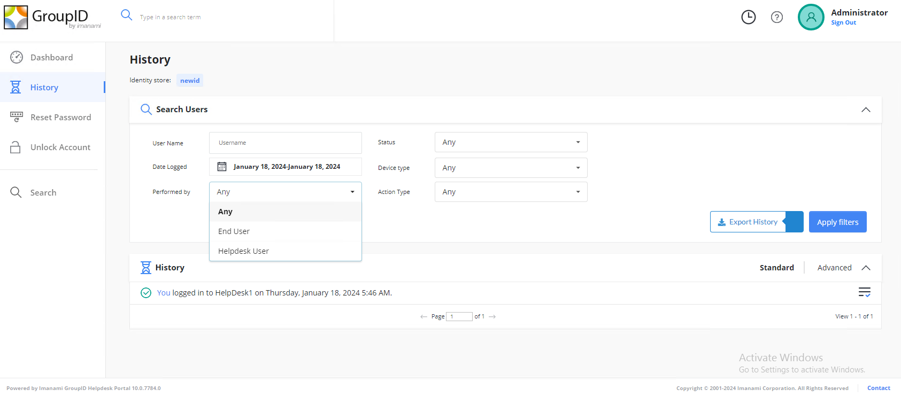

Symptom
This article addresses the issue encountered when attempting to search for the history
of a specific user through the Password Center Helpdesk Portal. The History feature of
the portal enables Helpdesk users to audit and analyze the functions performed by end
users on the user portal.
In the History section of the Password
Center Helpdesk Portal, when searching for the history of any individual user, no
records are displayed.
Cause
The default setting for the Performed By field is 'Any' instead of 'End User'.
Resolution
Select 'End User' in the Performed By field, and then search
for the user by typing their display name in the
User Name field.
